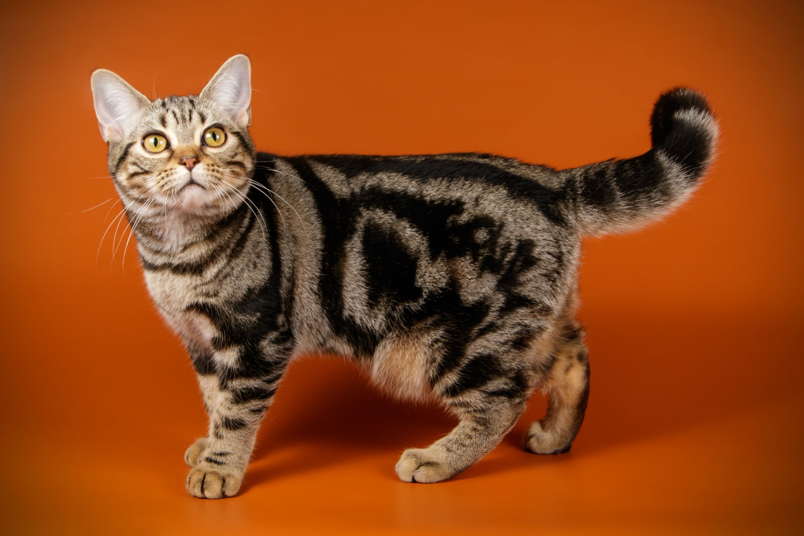

- British Shorthairs are medium to large-sized cats with a broad,
muscular build. They have a short, dense coat that comes in a wide
variety of colors and patterns, including blue, black, cream, red,
and tortoiseshell.
Persian Cats
- Persian cats are medium to large-sized cats with a round,
broad head and a short, flat nose. They have a long, thick coat
that comes in a wide variety of colors and patterns, including
white, black, cream, silver, and tabby.
Maine coon Cats
- Maine Coon cats are large, muscular cats with a long,
shaggy coat that comes in a variety of colors, including black,
brown, and red. They have large, tufted ears and a long, bushy
tail. They are known for their distinctive, lynx-like
appearance.

American Shorthair Cats
- American Shorthairs are medium-sized cats with a muscular
build and a short, dense coat that comes in a wide variety of
colors and patterns, including tabby, silver, and solid colors
like black, white, and blue.
Abyssinian Cats
- Abyssinian cats are medium-sized cats with a muscular,
lean build and a short, dense coat that is ticked, meaning each
hair has alternating bands of light and dark color. They come in
a variety of colors, including ruddy, red, blue, and fawn.